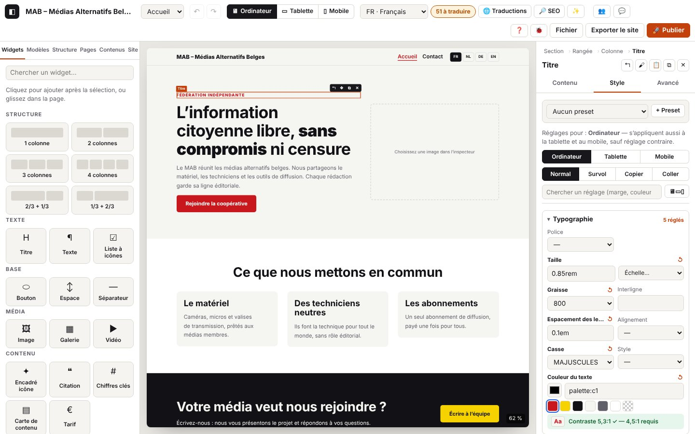

3. Mise en forme et design

Sur cette page
- 3.1 Régler un élément dans l'inspecteur
- 3.2 Importer une image dans un champ
- 3.3 Régler le style, appareil par appareil
- 3.4 Style au survol
- 3.5 Vérifier le contraste
- 3.6 Copier et coller le style
- 3.7 Presets de style
- 3.8 Couleurs et polices du site
- 3.9 Modèles de sections
- 3.10 CSS personnalisée et réglages avancés
- 3.11 Composants réutilisables
- 3.12 En-tête et pied de page en blocs
- 3.13 Le haut de l'inspecteur : chemin et boutons
- 3.14 Régler une section, une rangée, une colonne
- 3.15 Effets : apparition au défilement, survol animé
- 3.16 Ouvrir un composant dans une fenêtre (popup)
- Codes de ce chapitre
L'inspecteur, à droite, règle l'élément sélectionné : son contenu (textes, liens, images, listes), son style (par appareil et au survol), et ses réglages avancés. Le panneau Site règle ce qui vaut pour tout le site (couleurs, polices, échelles, presets, en-tête et pied de page), le panneau Modèles propose des sections prêtes et tes composants réutilisables.
Domaines du journal
inspector.*: onglets, champs modifiés (nom, type, langue, longueur ; jamais le texte), valeurs refusées, disposition des colonnes, liaisons, listes, import d'images.style.*: réglage de style (propriété, appareil, état), réinitialisation, valeurs refusées, presets, contraste, copier / coller le style.template.*: modèle de section inséré, composant choisi dans le panneau Modèles.action.component-*: composants (créer, insérer, modifier, détacher, renommer, supprimer) ; refus :action.refused.settings.*: réglages du panneau Site (couleurs, polices, échelles, presets, en-tête et pied), écrits par le panneau Site ; repris ici pour la partie design.- Utiles aussi :
store.commit(chaque modification),store.view(appareil),store.edit-target(modifier un composant, l'en-tête…),canvas.load.*etcanvas.scale(chapitre 2),ui.toast(messages).
3.1 Régler un élément dans l'inspecteur
But : changer le contenu et les réglages d'un élément sans toucher à la page.
Étapes
- Sélectionne l'élément. Onglets Contenu, Style, Avancé.
- Contenu : textes par langue, listes déroulantes, cases, liens, images, éléments de liste (+ Élément, ↑ ↓ ✕).
- Avancé : ancre (
#contact; accents et espaces sont remplacés automatiquement), classes CSS, libellé accessible, masquer sur un appareil ou dans une langue, CSS personnalisée.
Ce que tu vois : chaque changement s'affiche tout de suite dans la page.
Journal attendu (journaux/style-inspecteur.log)
Détails techniques : journal attendu
05:10:50.420 +18.85s DEBUG inspector.tab Onglet de l’inspecteur : Contenu {"tab":"content","from":"content","type":"heading"}
05:10:50.440 +18.87s DEBUG inspector.field Champ modifié : Niveau {"key":"level","type":"select","how":"liste","option":"h3"}
…
05:10:50.634 +19.07s DEBUG inspector.field Champ modifié : Texte {"key":"text","type":"inline","lang":"fr","how":"saisie","chars":16}
05:10:50.805 +19.24s DEBUG inspector.tab Onglet de l’inspecteur : Avancé {"tab":"advanced","from":"content","type":"heading"}
…
05:10:50.844 +19.27s DEBUG inspector.advanced Réglage avancé : anchor {"id":"n_1r5g674a09","props":["anchor"]}
…
05:10:51.037 +19.47s DEBUG inspector.advanced CSS personnalisée enregistrée {"id":"n_1r5g674a09","props":["css"],"chars":22}
05:10:51.214 +19.64s WARN inspector.css-refused CSS personnalisée refusée : utilisez seulement des déclarations « propriété: valeur; » (pas d’accolades, de @, d’url() ni de commentaires). {"id":"n_1r5g674a09","chars":27,"start":"color:red}body{display:none","error":{"name":"Error","message":"CSS personnalisée refusée : utilisez seulement des déclarations « propriété: valeur; » (pas d’accolades, de @, d’url() ni de commentaires).","stack":"Error: CSS personnalisée refusée : utilisez seulement des déclarations « propriété: valeur; » (pas d’accolades, de @, d’url() ni de commentaires).\nat sanitizeCustomCss (http://localhost:8791/core/tree.js:251:104)\nat http://localhost:8791/core/tree.js:282:42\nat update (http://localhost:8791/core/tree.js:160:3)\nat setAdvanced (http://localho…
05:10:51.214 +19.64s ERROR ui.toast Message affiché : CSS personnalisée refusée : utilisez seulement des déclarations « propriété: valeur; » (pas d’accolades, de @, d’url() ni de commentaires). {"type":"error"}
05:10:51.385 +19.82s DEBUG inspector.tab Onglet de l’inspecteur : Contenu {"tab":"content","from":"advanced","type":"heading"}À vérifier : inspector.tab (onglet, d'où l'on vient) ; inspector.field avec key (nom du champ), type (select, inline, richtext, url, toggle, number, icon…), how (liste, saisie, case, texte riche), lang, et chars (longueur) ou option / value ; inspector.advanced (réglage avancé). Un texte tapé dans l'inspecteur est enregistré à chaque lettre (store.commit « même étape d'annulation ») mais journalisé une fois, à la sortie du champ. Chaque redessin de l'inspecteur : inspector.render (TRACE).
Variantes
| Situation | Ce qui change à l'écran | Journal |
|---|---|---|
| Disposition des colonnes d'une rangée | les colonnes changent de largeur | inspector.layout (INFO) {"spans":[4,4,4],"before":"7-5"} (journaux/style-inspecteur-disposition.log) |
| Lien choisi dans « Lier à une page ou une section… » | inspector.link-pick (DEBUG) {"kind":"page"} (ou ancre, fenêtre (popup)) | |
| Lien tapé à la main | inspector.field {"type":"url","kind":…} : https, http (non sécurisé), e-mail, téléphone, ancre… (l'adresse elle-même n'est pas écrite) | |
| Case cochée (nouvel onglet…) | inspector.field {"type":"toggle","value":true} | |
| Élément de liste ajouté, monté, descendu, supprimé | inspector.list (DEBUG) {"action":"ajouté","count":4} | |
| Champ nombre vidé | la valeur précédente reste | inspector.field-empty (DEBUG) |
| Champ relié à une collection (carte, page de détail) | « Relié au champ … » | inspector.bind (INFO) {"field":…,"to":…} ; délier : "to":null |
| ✨ Décrire l'image (texte alternatif par l'IA) | texte proposé, marqué « à relire » | inspector.alt-ai (DEBUG), les lignes ai.* (chapitre 7), puis inspector.alt-ai-ok (INFO) ; pas de proposition : inspector.alt-ai-none (DEBUG) |
| Un autre participant modifie l'élément pendant que tu es dans un champ | l'inspecteur se redessine à la sortie du champ | inspector.remote-deferred (DEBUG) |
Journal attendu — lien, case, liste, adresse d'image (journaux/style-inspecteur-variantes.log)
Détails techniques : journal attendu
05:10:52.182 +20.61s DEBUG inspector.link-pick Lien choisi dans la liste : page {"kind":"page","value":"page:p_f0ooet9j"}
…
05:10:52.333 +20.76s DEBUG inspector.field Lien modifié : Lien {"key":"link","type":"url","how":"saisie","kind":"http (non sécurisé)"}
05:10:52.387 +20.82s DEBUG inspector.field Champ modifié : Ouvrir dans un nouvel onglet {"key":"newTab","type":"toggle","how":"case","value":true}
…
05:10:52.606 +21.04s DEBUG library.insert Bibliothèque : clic sur « Liste à icônes » {"type":"icon-list","how":"clic"}
…
05:10:52.622 +21.05s INFO action.add Widget ajouté : Liste à icônes {"type":"icon-list","id":"n_6236730x5f","parentType":"column"}
…
05:10:52.962 +21.39s DEBUG inspector.list Élément : ajouté {"key":"items","id":"n_6236730x5f","action":"ajouté","count":4}
…
05:10:53.224 +21.66s WARN inspector.image-url Adresse d’image sans https:// : elle risque d’être refusée ou bloquée {"field":"src","https":false,"chars":26}
…
05:10:53.406 +21.84s INFO store.undo Annuler {"left":24,"redo":1}
…Erreurs et refus
| Situation | Message affiché | Journal | Que faire |
|---|---|---|---|
| Valeur refusée par le cœur (champ, liste, disposition, liaison, texte alternatif) | message rouge | inspector.refused (WARN) avec what (field, list, layout, bind, advanced, alt), le champ et error | lis le message ; corrige la valeur |
CSS personnalisée dangereuse (}, @, url(), commentaires) | « CSS personnalisée refusée : utilisez seulement des déclarations « propriété: valeur; »… » ; champ en rouge | inspector.css-refused (WARN) avec la longueur et le début du texte | écris seulement propriété: valeur; |
3.2 Importer une image dans un champ
But : mettre une photo dans un widget Image, une carte, un fond de section, un logo.
Étapes
- Onglet Contenu (ou Style → Fond) : « Importer une image », choisis le fichier. Ou colle l'adresse d'une image en ligne (
https://…). - « Retirer » enlève l'image du champ.
Ce que tu vois : l'aperçu ; le message « Image ajoutée en WebP : 800×450 px, 2 Ko. »
Journal attendu (journaux/style-image.log)
Détails techniques : journal attendu
05:11:11.410 +39.84s INFO inspector.image.start [inspector.image#1] Import d’une image {"field":"src","type":"image/png","kb":2}
05:11:11.411 +39.84s INFO image.import.start [image.import#1] Import de l’image « c16-photo.png » {"name":"c16-photo.png","type":"image/png","kb":2}
05:11:11.421 +39.85s DEBUG image.import.decode [image.import#1 · 10 ms] Image lue : 800×450 px {"width":800,"height":450,"ms":10}
05:11:11.454 +39.88s DEBUG image.import.encode [image.import#1 · 43 ms] Version principale : 800×450 px, 2 Ko (image/webp) {"w":800,"h":450,"mime":"image/webp","kb":2,"ms":32}
05:11:11.471 +39.90s DEBUG image.import.variant [image.import#1 · 60 ms] Variante 480 px : 1 Ko {"w":480,"kb":1,"ms":15}
05:11:11.473 +39.90s INFO image.import.ok [image.import#1 · 62 ms] Image prête : 800×450 px, 2 Ko (−20 %), 1 variante(s) {"name":"c16-photo.webp","mime":"image/webp","width":800,"height":450,"kbIn":2,"kbOut":2,"gain":20,"variants":[480]}
05:11:11.474 +39.91s DEBUG inspector.image.webp [inspector.image#1 · 64 ms] Image convertie en WebP {"width":800,"height":450,"kb":2,"variants":1}
…
05:11:11.493 +39.92s INFO inspector.image.ok [inspector.image#1 · 83 ms] Image ajoutée : 800×450 px {"asset":"img_vm176qrs","field":"src"}
05:11:11.494 +39.92s INFO ui.toast Message affiché : Image ajoutée en WebP : 800×450 px, 2 Ko.
…À vérifier : le parcours inspector.image (champ, type, poids) contient le parcours image.import (lecture, conversion en WebP, variantes : chapitre 4), puis inspector.image.webp et inspector.image.ok avec l'identifiant de l'image (asset).
Variantes
| Situation | Journal |
|---|---|
| Fenêtre de choix fermée sans fichier | inspector.image-none (DEBUG) |
Adresse en ligne https://… | inspector.image-url (DEBUG) {"https":true} |
| Adresse effacée, ou « Retirer » | inspector.image-url « Adresse d'image effacée » / inspector.image-remove (DEBUG) ; le fichier reste dans le projet |
Erreurs
| Situation | Message affiché | Journal | Que faire |
|---|---|---|---|
| Fichier abîmé ou format non pris en charge | « Image illisible : fichier abîmé, incomplet, ou format que ce navigateur ne sait pas décoder. » | image.import.fail (ERROR) puis inspector.image.fail (ERROR) | réenregistre l'image en JPEG ou PNG, puis réessaie |
Adresse sans https:// (http://, ftp://…) | l'image risque de ne pas s'afficher | inspector.image-url (WARN) {"https":false} | utilise une adresse https://, ou importe le fichier |
3.3 Régler le style, appareil par appareil
But : adapter la taille, les marges, les couleurs… à l'ordinateur, à la tablette et au mobile.
Étapes
- Sélectionne l'élément, onglet Style.
- Choisis l'appareil (boutons Ordinateur / Tablette / Mobile de l'onglet, ou 🖥 ▭ ▯ en haut). L'ordinateur s'applique aussi aux autres appareils, sauf réglage contraire ; un réglage tablette s'applique aussi au mobile.
- Tape une valeur (
24px,1.5rem,50%,auto,clamp(1rem, 3vw, 2rem), un nombre seul devient des px) puis Entrée, ou choisis dans l'échelle du site (size:xl,space:m). ↺ revient à la valeur héritée. - 🖥▭▯ affiche les trois appareils côte à côte ; « Chercher un réglage » filtre la liste.
Ce que tu vois : la valeur s'applique dans la page ; le champ affiche en gris la valeur héritée.
Journal attendu (journaux/style-appareils.log)
Détails techniques : journal attendu
05:10:54.654 +23.09s DEBUG style.set Taille = 72px (Ordinateur) {"key":"fontSize","state":"normal","device":"desktop","target":"node","id":"n_2l6m0w3e5i","value":"72px","autoPx":true}
05:10:54.885 +23.32s DEBUG store.view Vue : device=mobile {"device":"mobile"}
05:10:54.887 +23.32s DEBUG canvas.scale Canevas mobile : 390 px {"device":"mobile","width":390,"scale":100,"available":792}
…
05:10:55.352 +23.78s DEBUG style.set Taille = 30px (Mobile) {"key":"fontSize","state":"normal","device":"mobile","target":"node","id":"n_2l6m0w3e5i","value":"30px"}
…
05:10:55.607 +24.04s DEBUG style.reset « Taille » réinitialisé : valeur héritée (Mobile) {"key":"fontSize","state":"normal","device":"mobile","target":"node","id":"n_2l6m0w3e5i"}
05:10:55.856 +24.29s WARN style.refused Valeur refusée pour « Taille » : 12pt (unité ou expression non autorisée) {"key":"fontSize","state":"normal","device":"mobile","target":"node","id":"n_2l6m0w3e5i","value":"12pt","kind":"length"}
05:10:55.857 +24.29s ERROR ui.toast Message affiché : Valeur refusée pour « Taille » : 12pt. Exemples : 24px, 1.5rem, 50%, auto, clamp(1rem, 3vw, 2rem). {"type":"error"}
…
05:10:56.109 +24.54s DEBUG style.reset « Taille » réinitialisé : valeur héritée (Mobile) {"key":"fontSize","state":"normal","device":"mobile","target":"node","id":"n_2l6m0w3e5i"}
05:10:56.170 +24.60s DEBUG store.view Vue : device=desktop {"device":"desktop"}
05:10:56.172 +24.60s DEBUG canvas.scale Canevas ordinateur : 1280 px, réduit à 62 % {"device":"desktop","width":1280,"scale":62,"available":792}
…À vérifier : style.set avec key (propriété), device (desktop, tablet, mobile ; tous au survol), state (normal ou survol), target (node, preset ou multi), value ; "autoPx":true quand un nombre seul a reçu px ; "token":true pour une valeur de l'échelle ; "palette":true pour une couleur de la palette. Changer d'appareil : store.view puis canvas.scale. ↺ : style.reset.
Variantes
| Situation | Ce qui change à l'écran | Journal |
|---|---|---|
| Appareil choisi dans l'onglet Style | style.device (DEBUG) {"device":"tablet","from":"desktop"} puis store.view (journaux/style-trois-appareils.log) | |
| Vue des trois appareils | trois champs par réglage | style.all-devices (DEBUG) {"on":true} ; style.set porte le device de la colonne |
| Plusieurs éléments sélectionnés | le réglage s'applique à tous | style.set {"target":"multi","count":3} |
| Marges intérieures ou extérieures « tout réinitialiser » | style.reset {"keys":[…]} | |
| Recherche d'un réglage | style.search (TRACE) | |
| Réglage demandé par Ctrl+K | le champ est mis en avant | style.focus (DEBUG) ; absent pour ce type d'élément : style.focus-missing (DEBUG) |
Journal attendu — tablette, trois appareils (journaux/style-trois-appareils.log)
Détails techniques : journal attendu
05:10:56.635 +25.07s DEBUG style.device Onglet Style : réglages pour Tablette {"device":"tablet","from":"desktop"}
05:10:56.635 +25.07s DEBUG store.view Vue : device=tablet {"device":"tablet"}
05:10:56.638 +25.07s DEBUG canvas.scale Canevas tablette : 820 px, réduit à 97 % {"device":"tablet","width":820,"scale":97,"available":792}
…
05:10:57.003 +25.43s DEBUG style.all-devices Vue « trois appareils côte à côte » {"on":true}
…
05:10:57.212 +25.64s DEBUG style.set Taille = 28px (Mobile) {"key":"fontSize","state":"normal","device":"mobile","target":"node","id":"n_2l6m0w3e5i","value":"28px"}
05:10:57.384 +25.82s DEBUG style.all-devices Vue d’un seul appareil {"on":false}
05:10:57.434 +25.86s DEBUG style.device Onglet Style : réglages pour Ordinateur {"device":"desktop","from":"tablet"}
05:10:57.435 +25.87s DEBUG store.view Vue : device=desktop {"device":"desktop"}
05:10:57.436 +25.87s DEBUG canvas.scale Canevas ordinateur : 1280 px, réduit à 62 % {"device":"desktop","width":1280,"scale":62,"available":792}
…Erreurs
| Situation | Message affiché | Journal | Que faire |
|---|---|---|---|
Unité ou expression non autorisée (12pt, calc(1px) }body{…) | « Valeur refusée pour « Taille » : 12pt. Exemples : 24px, 1.5rem, 50%, auto, clamp(…). » ; champ en rouge | style.refused (WARN) avec key, value, device | utilise px, rem, em, %, vw, vh, ch, ou une expression clamp(), min(), max(), calc() |
| Le cœur refuse le réglage | message rouge | style.set-fail (WARN) avec error | envoie le journal |
| Mode relecture | « Mode relecture… » | store.readonly (WARN), pas de style.set | — |
3.4 Style au survol
But : changer l'apparence d'un bouton, d'une carte… quand la souris passe dessus.
Étapes : onglet Style → Survol ; seules les propriétés utiles au survol sont proposées (couleurs, bordure, ombre, transformation…) ; Normal pour revenir.
Ce que tu vois : « Réglages pour : Survol (tous appareils) » ; dans la page, le style s'applique au passage de la souris.
Journal attendu (journaux/style-survol.log)
Détails techniques : journal attendu
05:10:57.884 +26.32s DEBUG style.state Onglet Style : état survol (réglages communs à tous les appareils) {"state":"hover"}
…
05:10:58.080 +26.51s DEBUG style.set Couleur de fond = palette:c3 (survol) {"key":"background","state":"survol","device":"tous","target":"node","id":"n_5x206n134e","value":"palette:c3","palette":true}
05:10:58.319 +26.75s DEBUG style.state Onglet Style : état normal {"state":"normal"}À vérifier : style.state {"state":"hover"}, puis style.set avec "state":"survol","device":"tous".
Variantes et erreurs : comme en 3.3.
3.5 Vérifier le contraste
But : garder les textes lisibles (WCAG AA : 4,5:1, ou 3:1 pour un grand texte).
Étapes : règle la couleur du texte ou du fond (onglet Style) ; la pastille sous la couleur donne le contraste réel.
Ce que tu vois : pastille verte « Contraste 17,1:1 ✓ » ou rouge « Contraste 1,8:1 ✗ — 4,5:1 requis » ; pour un fond en image, « vérifiez le contraste à l'œil ».
Journal attendu (journaux/style-contraste.log)
Détails techniques : journal attendu
05:10:58.636 +27.07s WARN style.contrast-low Contraste insuffisant : 1,8:1 pour 4.5:1 requis {"id":"n_4y660b0u1y","type":"text","ratio":1.76,"required":4.5,"fg":"#bbbbbb","bg":"#f5f5f2"}
05:10:58.646 +27.08s DEBUG style.set Couleur du texte = #bbbbbb (Ordinateur) {"key":"color","state":"normal","device":"desktop","target":"node","id":"n_4y660b0u1y","value":"#bbbbbb"}
…
05:10:59.013 +27.44s DEBUG style.contrast-ok Contraste suffisant : 17,1:1 {"id":"n_4y660b0u1y","ratio":17.11,"required":4.5}
05:10:59.024 +27.45s DEBUG style.set Couleur du texte = palette:c3 (Ordinateur) {"key":"color","state":"normal","device":"desktop","target":"node","id":"n_4y660b0u1y","value":"palette:c3","palette":true}À vérifier : style.contrast-low (WARN) avec ratio, required, fg (texte) et bg (fond) dès que le contraste devient insuffisant ; style.contrast-ok (DEBUG) quand il redevient suffisant. Le contraste est signalé quand il change (pas à chaque redessin) ; le premier affichage d'un contraste correct est en TRACE.
Variantes
| Situation | Journal |
|---|---|
| Fond en image | style.contrast-unknown (DEBUG) |
| Couleur de la palette trop claire (panneau Site) | settings.color avec lowContrast (3.8) |
Erreurs
| Situation | Message affiché | Journal | Que faire |
|---|---|---|---|
| Contraste impossible à calculer (couleur illisible) | pas de pastille | style.contrast-error (WARN) avec error | envoie le journal |
3.6 Copier et coller le style
But : donner à un élément exactement le style d'un autre.
Étapes : onglet Style → « Copier » (ou 🖌 en haut de l'inspecteur, ou clic droit → « Copier le style ») ; sélectionne un ou plusieurs éléments → « Coller » (📋).
Ce que tu vois : « Style copié. », « Style collé. » (ou « Style collé sur 3 éléments. »). La largeur d'une colonne n'est pas copiée.
Journal attendu (journaux/style-copier-coller.log)
Détails techniques : journal attendu
05:10:59.453 +27.88s INFO style.copy Style copié : Titre {"id":"n_2l6m0w3e5i","type":"heading","props":{"desktop":1,"tablet":0,"mobile":1,"hover":0}}
05:10:59.453 +27.88s INFO ui.toast Message affiché : Style copié.
05:10:59.509 +27.94s DEBUG store.select Sélection : heading {"id":"n_227141693i","type":"heading"}
…
05:10:59.649 +28.08s INFO style.paste Style collé {"count":1,"from":"heading","types":["heading"]}
05:10:59.649 +28.08s INFO ui.toast Message affiché : Style collé.À vérifier : style.copy (INFO) avec le nombre de réglages par appareil (props) ; style.paste (INFO) avec count, le type d'origine (from) et les types collés (types).
Variantes
| Situation | Journal |
|---|---|
| Coller sans avoir copié | style.paste-empty (DEBUG) |
| Rien de sélectionné | action.none (DEBUG) {"action":"coller le style"} |
Erreurs : une règle du cœur qui refuse donne action.refused {"action":"coller le style"}.
3.7 Presets de style
But : définir une fois l'apparence d'un type d'élément (« Bouton principal ») et l'appliquer partout ; la modifier une fois pour tous.
Étapes
- Onglet Style d'un élément bien réglé → « + Preset », nomme-le, « Créer » : l'élément suit désormais le preset.
- Sur un autre élément du même type : choisis le preset dans la liste.
- « Modifier le preset » : les réglages s'appliquent au preset (et à tous ses éléments) ; « Terminer ».
- « Détacher » : l'élément garde son apparence mais ne suit plus le preset. « Par défaut pour les … » : chaque nouvel élément de ce type le reçoit.
- Panneau Site → Presets : renommer, dupliquer, supprimer (les éléments gardent leur apparence).
Ce que tu vois : un bandeau « ✎ Vous modifiez le preset « … » : 2 éléments suivront ces réglages. »
Journal attendu (journaux/style-presets.log)
Détails techniques : journal attendu
05:11:00.085 +28.52s DEBUG style.preset-form Formulaire « nouveau preset » ouvert {"open":true,"type":"button"}
…
05:11:00.167 +28.60s INFO style.preset-create Preset « Bouton sombre » créé à partir de l’élément {"preset":"ps_f6by5zxy","type":"button","id":"n_5x206n134e","props":1}
05:11:00.167 +28.60s INFO ui.toast Message affiché : Preset « Bouton sombre » créé. Appliquez-le à d’autres « Bouton » depuis cette liste.
…
05:11:00.623 +29.05s INFO style.preset-apply Preset « Bouton sombre » appliqué {"id":"n_2s1e5v6x46","type":"button","preset":"ps_f6by5zxy"}
05:11:00.903 +29.33s INFO style.preset-edit Modification du preset « Bouton sombre » : les réglages s’appliquent à 2 élément(s) {"preset":"ps_f6by5zxy","on":true,"uses":2}
…
05:11:01.138 +29.57s DEBUG style.set Couleur de fond = palette:c2 (Ordinateur, preset « Bouton sombre ») {"key":"background","state":"normal","device":"desktop","target":"preset","preset":"ps_f6by5zxy","value":"palette:c2","palette":true}
05:11:01.367 +29.80s INFO style.preset-edit Fin de la modification du preset « Bouton sombre » {"preset":"ps_f6by5zxy","on":false,"uses":2}
…
05:11:01.432 +29.86s INFO style.preset-default Preset « Bouton sombre » par défaut pour les nouveaux « Bouton » {"type":"button","preset":"ps_f6by5zxy"}
…
05:11:01.632 +30.06s INFO style.preset-detach Élément détaché du preset « Bouton sombre » : apparence gardée {"id":"n_2s1e5v6x46","preset":"ps_f6by5zxy"}
05:11:01.868 +30.30s DEBUG style.preset-form Formulaire « nouveau preset » ouvert {"open":true,"type":"button"}
05:11:01.936 +30.37s WARN style.preset-refused Preset non créé : Donnez un nom au preset. {"what":"create","id":"n_2s1e5v6x46","type":"button","chars":0,"error":{"name":"Error","message":"Donnez un nom au preset.","stack":"Error: Donnez un nom au preset.\nat cleanName (http://localhost:8791/core/presets.js:17:17)\nat createPreset (http://localhost:8791/core/presets.js:54:31)\nat presetFromNode (http://localhost:8791/core/presets.js:67:13)\nat HTMLButtonElement.create (http://localhost:8791/editor/styletab.js:288:17)"}}
05:11:01.937 +30.37s ERROR ui.toast Message affiché : Donnez un nom au preset. {"type":"error"}À vérifier : style.preset-form (formulaire ouvert), style.preset-create (identifiant du preset, type, nombre de réglages repris), style.preset-apply, style.preset-edit (on, uses), style.set avec "target":"preset", style.preset-default, style.preset-detach.
Variantes
| Situation | Journal |
|---|---|
| « Aucun preset » / retour au preset par défaut | style.preset-apply {"preset":"-"} / {"preset":null} |
| Échap dans le nom du nouveau preset | style.preset-form {"open":false} |
| Panneau Site : renommer, dupliquer, supprimer | settings.preset-rename, settings.preset-duplicate, settings.preset-delete (INFO) ; suppression annulée : settings.preset-delete-cancel (DEBUG) |
Erreurs
| Situation | Message affiché | Journal | Que faire |
|---|---|---|---|
| Nom vide | « Donnez un nom au preset. » | style.preset-refused (WARN) {"what":"create"} | donne un nom |
| Preset introuvable (supprimé par un autre participant) | message rouge | style.preset-refused {"what":"apply"} (ou default, detach) | rouvre la liste |
| Refus dans le panneau Site | message rouge | settings.refused (WARN) | lis le message |
3.8 Couleurs et polices du site
But : changer l'identité du site en une fois : palette, polices, arrondis, échelles de texte et d'espacements.
Étapes
- Panneau Site : clique sur une couleur de la palette et choisis-en une autre ; renomme-la ; « + Couleur » en ajoute une.
- Polices des titres et du texte ; arrondi des coins ; échelles (« Échelle de texte », « Espacements »).
- « Couleurs hors palette » : remplace en un clic une couleur figée dans des éléments par une couleur de la palette.
Ce que tu vois : tout le site suit immédiatement ; un changement de police recharge le canevas (pour charger la police).
Journal attendu (journaux/style-couleurs-polices.log)
Détails techniques : journal attendu
05:11:02.307 +30.74s DEBUG store.commit Modification {"key":"palette-c1","source":"panel","past":39,"page":"p_7mv9bc93"}
05:11:02.322 +30.75s INFO settings.color Couleur « Principale » : #0055aa {"key":"c1","value":"#0055aa"}
05:11:02.633 +31.06s DEBUG store.commit Modification {"key":null,"source":"panel","past":40,"page":"p_7mv9bc93"}
05:11:02.633 +31.06s INFO canvas.load.start [canvas.load#6] Chargement complet du canevas : polices du site {"reason":"polices du site","page":"p_7mv9bc93","lang":"fr","device":"desktop"}
05:11:02.634 +31.07s DEBUG canvas.load.render [canvas.load#6 · 1 ms] Page rendue {"ms":1,"kb":28}
05:11:02.645 +31.08s INFO settings.font Police des titres : Georgia (classique) {"role":"heading","font":"georgia","google":true}
05:11:02.671 +31.10s INFO canvas.load.ok [canvas.load#6 · 38 ms] Canevas prêt {"nodes":35,"scale":62}À vérifier : settings.color (INFO) avec la couleur ; settings.font (INFO) ; la police déclenche canvas.load.start {"reason":"polices du site"} → canvas.load.ok. Pendant que tu bouges le sélecteur de couleur, settings.color est en TRACE ; la ligne INFO arrive quand tu le relâches.
Variantes
| Situation | Journal |
|---|---|
| Couleur renommée, ajoutée, supprimée | settings.color-name, settings.color-add, settings.color-remove (INFO) |
| Couleur hors palette remplacée partout | settings.color-replace (INFO) avec le nombre de réglages |
| Échelles de texte et d'espacements | settings.type-scale, settings.space-scale (INFO) |
| Arrondi, transitions entre pages | settings.theme (INFO) |
| Ctrl+Z | store.undo : la couleur revient |
Erreurs
| Situation | Message affiché | Journal | Que faire |
|---|---|---|---|
| Couleur principale trop claire pour un bouton lisible | la paire « bouton » passe au rouge | settings.color avec lowContrast ; à l'export, l'avertissement « contraste insuffisant » (chapitre 8) | fonce la couleur |
| Réglage refusé | message rouge | settings.refused (WARN) | lis le message |
3.9 Modèles de sections
But : ajouter une section prête (héros, texte + image, contact, appel à l'action…) qui suit la palette du site.
Étapes : panneau Modèles → clique sur un modèle (ajouté après la section sélectionnée) ou glisse-le à l'endroit voulu. Aussi par Ctrl+K « Modèle : … ».
Ce que tu vois : la section apparaît, sélectionnée, et le canevas défile jusqu'à elle.
Journal attendu (clic puis glisser : journaux/style-modele-section.log)
Détails techniques : journal attendu
05:11:03.369 +31.80s INFO action.add-section Section ajoutée depuis un modèle (1 rangée(s)) {"id":"n_5d4g5w6d5e","template":true,"index":1}
05:11:03.369 +31.80s INFO template.insert Modèle de section inséré : Héros {"template":"hero","id":"n_5d4g5w6d5e","rows":1}
05:11:03.396 +31.83s DEBUG canvas.scroll Défilement vers l’élément sélectionné {"id":"n_5d4g5w6d5e","from":0,"to":554}
…
05:11:04.013 +32.44s INFO dnd.start [dnd#7] Glisser : Contact {"kind":"template","type":"section","id":"contact","from":"modèles"}
…
05:11:04.455 +32.89s INFO dnd.ok [dnd#7 · 442 ms] Ajouté dans Page, position 5 {"id":"n_3x495g006d","type":"section","kind":"new","parentId":"n_464i603j4s","parentType":"page","index":4,"where":"canevas"}À vérifier : au clic, action.add-section {"template":true} puis template.insert (identifiant du modèle, nombre de rangées) ; en glissant, dnd.start {"kind":"template","id":…} puis dnd.ok {"parentType":"page"}.
Variantes
| Situation | Journal |
|---|---|
| Par Ctrl+K | cmdk.run {"id":"tpl:hero"} puis action.add-section |
Erreurs
| Situation | Message affiché | Journal | Que faire |
|---|---|---|---|
| Modèle impossible à construire (bogue) | erreur | template.fail (ERROR) avec error | envoie le journal |
| Emplacement refusé | message rouge | action.refused {"action":"ajouter une section"} | sélectionne une section |
3.10 CSS personnalisée et réglages avancés
But : pour les experts, ajouter des déclarations CSS à un élément ; nommer une zone ; masquer un élément.
Étapes : onglet Avancé ; écris propriété: valeur; dans « CSS personnalisée », puis quitte le champ.
Ce que tu vois : la règle s'applique ; une CSS refusée met le champ en rouge.
Journal attendu : voir 3.1 (journaux/style-inspecteur.log) : inspector.advanced « CSS personnalisée enregistrée » {"props":["css"],"chars":22}, puis le refus inspector.css-refused (WARN).
Variantes
| Situation | Journal |
|---|---|
| Masquer sur ordinateur, tablette, mobile ; dans une langue | inspector.advanced {"props":["hideOn"]} / ["hideLangs"] |
| Libellé accessible (par langue) | inspector.advanced {"props":["ariaLabel"],"lang":"fr"} |
Erreurs : inspector.css-refused (3.1).
3.11 Composants réutilisables
But : un bloc (section, rangée, colonne ou widget) défini une fois, utilisé sur plusieurs pages, modifié une fois pour toutes.
Étapes
- Clic droit sur un bloc → « Créer un composant… » (ou onglet Avancé → « Créer un composant à partir de ce bloc ») ; donne-lui un nom.
- Panneau Modèles → « Mes composants » : clique (ou glisse) pour l'insérer sur une autre page.
- Double-clic sur une instance (ou « Modifier le composant ») : bandeau « Vous modifiez le composant… » ; modifie ; « Terminer ».
- « Détacher » : l'instance devient une copie indépendante. Dans le panneau : renommer, ✕ supprimer (les instances deviennent des copies).
Ce que tu vois : les instances ont un contour violet pointillé ; une modification du composant apparaît partout.
Journal attendu — créer et insérer (journaux/style-composant-creer.log)
Détails techniques : journal attendu
05:11:04.956 +33.39s DEBUG ctxmenu.open Menu contextuel : Section (structure) {"id":"n_43295m1m6y","type":"section","from":"structure","items":10,"disabled":["parent"]}
…
05:11:05.152 +33.58s DEBUG ctxmenu.action Menu contextuel : Créer un composant… {"action":"component","id":"n_43295m1m6y","type":"section"}
…
05:11:05.172 +33.60s INFO action.component-create Composant « Équipe » créé : l’élément devient une instance {"component":"cp_2sj6y87r","type":"section","instance":"n_1c1t3r3n4e"}
…
05:11:05.801 +34.23s DEBUG template.component Panneau Modèles : clic sur le composant « Équipe » {"component":"cp_2sj6y87r","uses":1}
…
05:11:05.817 +34.25s INFO action.component-insert Composant « Équipe » inséré {"component":"cp_2sj6y87r","type":"section","id":"n_2j2t170q6m","parentType":"page"}
05:11:05.848 +34.28s DEBUG canvas.scroll Défilement vers l’élément sélectionné {"id":"n_2j2t170q6m","from":0,"to":485}Journal attendu — modifier (journaux/style-composant-modifier.log)
Détails techniques : journal attendu
05:11:06.239 +34.67s DEBUG canvas.dblclick Double-clic sur une instance : modification du composant {"target":"component","id":"cp_2sj6y87r"}
05:11:06.241 +34.67s INFO store.edit-target Édition : component « cp_2sj6y87r » {"kind":"component","id":"cp_2sj6y87r"}
05:11:06.250 +34.68s INFO canvas.load.start [canvas.load#7] Chargement complet du canevas : modification du composant {"reason":"modification du composant","page":"p_7mv9bc93","lang":"fr","device":"desktop","edit":"component"}
05:11:06.252 +34.68s DEBUG canvas.load.render [canvas.load#7 · 2 ms] Page rendue {"ms":1,"kb":24}
05:11:06.300 +34.73s INFO canvas.load.ok [canvas.load#7 · 50 ms] Canevas prêt {"nodes":14,"scrollY":467,"scale":62}
…
05:11:06.759 +35.19s DEBUG edit.dblclick Double-clic sur un texte de la page {"key":"text","id":"n_075f364h5l"}
05:11:06.760 +35.19s INFO edit.start [edit#5] Édition dans la page : heading · text {"id":"n_075f364h5l","type":"heading","key":"text","field":"inline","lang":"fr","chars":16,"edit":"component"}
…
05:11:07.152 +35.58s INFO edit.ok [edit#5 · 392 ms] Édition terminée : texte enregistré (une seule étape d’annulation) {"id":"n_075f364h5l","key":"text","changed":true,"chars":8,"before":16,"inputs":8}
…
05:11:07.383 +35.81s INFO store.edit-target Retour à la page
05:11:07.389 +35.82s INFO canvas.load.start [canvas.load#8] Chargement complet du canevas : retour à la page {"reason":"retour à la page","page":"p_7mv9bc93","lang":"fr","device":"desktop"}
05:11:07.391 +35.82s DEBUG canvas.load.render [canvas.load#8 · 2 ms] Page rendue {"ms":1,"kb":35}
05:11:07.413 +35.84s INFO canvas.load.ok [canvas.load#8 · 24 ms] Canevas prêt {"nodes":42,"scrollY":467,"scale":62}
…À vérifier : action.component-create (identifiant cp_…, type, instance créée) ; template.component puis action.component-insert ; le double-clic donne canvas.dblclick {"target":"component"} → store.edit-target → rechargement du canevas sur le composant (canvas.load.*, raison « modification du composant ») ; l'écriture est un parcours edit avec "edit":"component" ; « Terminer » : store.edit-target « Retour à la page » puis un nouveau chargement.
Variantes
| Situation | Journal |
|---|---|
| « Modifier le composant » (inspecteur ou menu) | action.component-edit (DEBUG) puis store.edit-target |
| Détacher | action.component-detach (INFO) |
| Nom non donné (fenêtre annulée) | action.component-cancel (INFO) |
| Renommer dans le panneau Modèles | action.component-rename (INFO), une seule fois (Entrée puis sortie du champ) |
| Supprimer | action.component-delete (INFO) avec le nombre d'instances qui deviennent des copies ; confirmation refusée : action.component-delete-cancel (INFO) |
| Par Ctrl+K « Composant : … » | cmdk.run {"id":"cmp:…"} puis action.component-insert |
Journal attendu — renommer, refus, supprimer (journaux/style-composant-renommer-supprimer.log)
Détails techniques : journal attendu
05:11:07.892 +36.32s INFO action.component-rename Composant renommé {"component":"cp_2sj6y87r","chars":16}
…
05:11:08.324 +36.76s WARN action.refused Action « créer un composant » refusée : une autre modification (composant, en-tête…) est en cours {"action":"créer un composant","reason":"edit-target","edit":"header"}
05:11:08.324 +36.76s ERROR ui.toast Message affiché : Terminez d’abord la modification en cours. {"type":"error"}
…
05:11:08.586 +37.02s INFO action.component-delete Composant « Appel à l’action » supprimé : 2 instance(s) deviennent des copies {"component":"cp_2sj6y87r","uses":2}Erreurs et refus
| Situation | Message affiché | Journal | Que faire |
|---|---|---|---|
| Rien de sélectionné | « Sélectionnez d'abord une section, une rangée, une colonne ou un widget. » | action.refused {"reason":"no-selection"} | sélectionne le bloc |
| Pendant la modification d'un composant, de l'en-tête… | « Terminez d'abord la modification en cours. » | action.refused {"reason":"edit-target"} | clique « Terminer » dans le bandeau |
| Détacher pendant la modification du composant | « Détachez depuis la page… » | action.refused {"action":"détacher"} | « Terminer », puis détache |
| Une rangée ou une colonne sans emplacement possible | « Sélectionnez une section ou une colonne pour y placer cette rangée. » | action.refused {"action":"insérer un composant"} | sélectionne l'endroit indiqué |
| Renommer avec un nom refusé | message rouge | action.refused {"action":"renommer un composant"} | change le nom |
3.12 En-tête et pied de page en blocs
But : composer l'en-tête (logo, menu, langues…) et le pied de page avec des blocs, comme une page.
Étapes
- Panneau Site → En-tête (ou Pied de page) → « Personnaliser avec des blocs » (puis « Modifier »).
- Le bandeau « Vous modifiez l'en-tête du site — toutes les pages » s'affiche ; le contenu de la page est verrouillé. Règle les blocs comme d'habitude ; « Terminer ».
- Une fois personnalisé, un double-clic sur l'en-tête dans la page y revient. « Revenir au défaut » annule la personnalisation.
Ce que tu vois : la page grisée, l'en-tête modifiable ; après « Terminer », l'en-tête personnalisé sur toutes les pages.
Journal attendu (journaux/style-entete-blocs.log)
Détails techniques : journal attendu
05:11:09.151 +37.58s INFO settings.layout-customize En-tête converti en blocs modifiables {"zone":"header"}
05:11:09.151 +37.58s INFO settings.layout-edit Modification de l’en-tête en blocs {"zone":"header"}
05:11:09.152 +37.58s INFO store.edit-target Édition : header {"kind":"header"}
05:11:09.159 +37.59s INFO canvas.load.start [canvas.load#9] Chargement complet du canevas : modification de l’en-tête {"reason":"modification de l’en-tête","page":"p_7mv9bc93","lang":"fr","device":"desktop","edit":"header"}
05:11:09.160 +37.59s DEBUG canvas.load.render [canvas.load#9 · 1 ms] Page rendue {"ms":1,"kb":35}
05:11:09.190 +37.62s INFO canvas.load.ok [canvas.load#9 · 31 ms] Canevas prêt {"nodes":8,"scale":62}
05:11:09.621 +38.05s DEBUG store.select Sélection : nav-menu {"id":"n_3h6h4a0d31","type":"nav-menu"}
05:11:09.667 +38.10s DEBUG inspector.tab Onglet de l’inspecteur : Contenu {"tab":"content","from":"advanced","type":"nav-menu"}
05:11:09.677 +38.11s DEBUG inspector.field Champ modifié : Alignement {"key":"align","type":"select","how":"liste","option":"start"}
…
05:11:09.900 +38.33s INFO store.edit-target Retour à la page
05:11:09.908 +38.34s INFO canvas.load.start [canvas.load#10] Chargement complet du canevas : retour à la page {"reason":"retour à la page","page":"p_7mv9bc93","lang":"fr","device":"desktop"}
05:11:09.910 +38.34s DEBUG canvas.load.render [canvas.load#10 · 2 ms] Page rendue {"ms":1,"kb":37}
05:11:09.938 +38.37s INFO canvas.load.ok [canvas.load#10 · 30 ms] Canevas prêt {"nodes":68,"scale":62}
…À vérifier : settings.layout-customize (première fois) → settings.layout-edit → store.edit-target {"kind":"header"} → canvas.load.* (raison « modification de l'en-tête », peu d'éléments nodes) → réglages (inspector.field…) → store.edit-target « Retour à la page » → canvas.load.*.
Variantes
| Situation | Journal |
|---|---|
| Double-clic sur l'en-tête personnalisé | canvas.dblclick {"target":"header"} (journaux/style-entete-double-clic.log) |
| Double-clic sur l'en-tête non personnalisé | canvas.zone-locked (chapitre 2.15) |
| Revenir au défaut | settings.layout-reset (INFO) |
| Réglages de l'en-tête par défaut (menu mobile, collant, langues), logo, texte du pied | settings.header, settings.logo, settings.footer-text (INFO) ; adresse en ligne refusée pour le logo : settings.logo-ignored (WARN) |
Erreurs
| Situation | Message affiché | Journal | Que faire |
|---|---|---|---|
| Créer un composant pendant la modification de l'en-tête | « Terminez d'abord la modification en cours. » | action.refused {"reason":"edit-target"} | « Terminer » d'abord |
| Réglage refusé | message rouge | settings.refused (WARN) | lis le message |
3.13 Le haut de l'inspecteur : chemin et boutons
But : savoir où se trouve l'élément sélectionné et agir dessus sans quitter l'inspecteur.
Étapes
- Sélectionne un élément.
- En haut de l'inspecteur, le chemin montre où il se trouve (par exemple « Section › Rangée › Colonne › Titre ») : clique sur un niveau pour sélectionner ce niveau.
- À côté du nom de l'élément : ↰ sélectionne le parent (comme Échap), 🖌 copie son style, 📋 colle le style copié, ⧉ duplique (Ctrl+D), ✕ supprime (Suppr).
Chemin normal : l'inspecteur suit la sélection. Quand plusieurs éléments sont sélectionnés (Maj+clic), le haut affiche « 3 éléments sélectionnés » et seulement 📋 ⧉ ✕, qui agissent sur tous (2.10). Si un autre participant travaille sur cet élément, une ligne « ✎ … » donne son nom (chapitre 10).
| Situation | Journal |
|---|---|
| Clic sur un niveau du chemin | store.select |
| ↰ | action.parent |
| 🖌 / 📋 | style.copy / style.paste (3.6) |
| ⧉ / ✕ | action.duplicate / action.delete (2.8) |
3.14 Régler une section, une rangée, une colonne
But : régler la largeur d'une section, le découpage d'une rangée et la largeur des colonnes, par appareil.
Étapes
- Section (onglet Contenu) : Largeur du contenu (Centrée, Large, Pleine largeur ; le fond va toujours d'un bord à l'autre) et Balise (sens pour Google et les lecteurs d'écran) (section, div, article, aside, nav, header, footer).
- Rangée (onglet Contenu) : Disposition des colonnes (1 colonne, 2 colonnes égales, 3 colonnes, 4 colonnes, 2/3 + 1/3, 1/3 + 2/3, 1/4 + 3/4, 3/4 + 1/4, 1/4 + 1/2 + 1/4) et Empiler les colonnes (Sur mobile, Sur tablette et mobile, Jamais).
- Colonne (onglet Style → Disposition) : Largeur de colonne (sur 12) ; choisis d'abord l'appareil (Ordinateur, Tablette, Mobile) pour une largeur différente sur téléphone.
- Pour l'écart entre colonnes ou entre widgets : onglet Style → Disposition → Espace entre les éléments (sur la rangée ou la colonne) ; pour aligner les colonnes entre elles : Alignement vertical du contenu (sur la rangée).
Chemin normal : le canevas suit tout de suite ; vérifie avec le bouton Mobile en haut. Une rangée « Sur mobile » met ses colonnes l'une sous l'autre sur téléphone, sauf si tu as réglé une largeur de colonne pour le mobile.
| Situation | Ce qui change | Journal |
|---|---|---|
| Disposition des colonnes choisie | les colonnes sont redécoupées ; avec moins de colonnes, les widgets des colonnes retirées passent dans la dernière colonne gardée (rien n'est perdu) | inspector.layout (INFO) |
| Largeur du contenu, balise, empilement | inspector.field (DEBUG) {"type":"select"} | |
| Largeur de colonne | style.set {"key":"span"} | |
| Disposition refusée | message rouge | inspector.refused (WARN) {"what":"layout"} |
3.15 Effets : apparition au défilement, survol animé
But : donner un peu de vie au site (un bloc qui apparaît en douceur, une carte qui se soulève au survol), sans gêner les visiteurs.
Étapes
- Sélectionne l'élément, onglet Style, groupe Effets.
- Apparition au défilement : fade (fondu), up (glisse vers le haut), zoom. Règle-le sur Ordinateur : il vaut pour tous les appareils.
- Survol animé : bouton Survol, puis Transformation (Soulever, Agrandir, Réduire) ; reviens sur Normal et règle Durée de transition (ms) (par exemple 200) pour que le mouvement soit doux.
- Opacité (de 0 à 1) rend l'élément plus ou moins transparent.
Chemin normal : l'apparition se voit sur le site publié, au défilement, dans les navigateurs qui savent le faire ; ailleurs, l'élément est simplement affiché. Un visiteur qui a demandé à son appareil de réduire les animations ne la voit jamais.
| Situation | Journal |
|---|---|
| Effet réglé | style.set avec key = reveal, transform, transitionDuration ou opacity |
| Effet retiré (↺) | style.reset |
Bon à savoir : une transformation réglée en état Normal s'applique tout le temps ; c'est en état Survol qu'elle joue au passage de la souris.
3.16 Ouvrir un composant dans une fenêtre (popup)
But : un bouton qui ouvre une petite fenêtre par-dessus la page (un plan d'accès, un horaire), sans créer de page.
Étapes
- Prépare le contenu de la fenêtre dans un bloc, puis fais-en un composant (3.11).
- Sélectionne un Bouton, onglet Contenu → Lien → liste Lier à une page ou une section… → groupe Ouvrir en fenêtre (popup) → choisis le composant (▣ nom).
Chemin normal : sur le site publié, le bouton ouvre la fenêtre avec le contenu du composant et une croix pour la fermer (Échap ferme aussi). Le groupe Ouvrir en fenêtre (popup) n'apparaît que si le site a au moins un composant, et seulement pour le widget Bouton. La fenêtre utilise une fonction des navigateurs récents.
| Situation | Ce qui change | Journal |
|---|---|---|
| Composant choisi | le lien du bouton devient popup:… | inspector.link-pick (DEBUG) avec kind = fenêtre (popup) |
| Composant supprimé ensuite | la vérification avant export le signale : « … ouvre une fenêtre (popup) dont le composant n'existe plus » | voir audit.* (chapitre 8) |
Codes de ce chapitre
| Code | Niveau | Sens |
|---|---|---|
action.component-cancel | INFO | création de composant annulée (pas de nom) |
action.component-create | INFO | composant créé, le bloc devient une instance |
action.component-delete | INFO | composant supprimé (instances → copies) |
action.component-delete-cancel | INFO | suppression du composant annulée |
action.component-detach | INFO | instance détachée (copie indépendante) |
action.component-edit | DEBUG | modification du composant demandée |
action.component-insert | INFO | composant inséré |
action.component-rename | INFO | composant renommé |
inspector.advanced | DEBUG | réglage avancé enregistré (ancre, classes, CSS, masquer…) |
inspector.alt-ai | DEBUG | texte alternatif demandé à l'IA |
inspector.alt-ai-none | DEBUG | pas de texte alternatif proposé |
inspector.alt-ai-ok | INFO | texte alternatif proposé (à relire) |
inspector.bind | INFO | champ relié ou délié d'une collection |
inspector.css-refused | WARN | CSS personnalisée refusée |
inspector.field | DEBUG | champ modifié (nom, type, langue, longueur) |
inspector.field-empty | DEBUG | champ nombre vidé (valeur gardée) |
inspector.image.start | INFO | import d'une image dans un champ |
inspector.image.webp | DEBUG | image convertie en WebP |
inspector.image.ok | INFO | image ajoutée au champ |
inspector.image.fail | ERROR | image non importée |
inspector.image-none | DEBUG | choix de fichier annulé |
inspector.image-remove | DEBUG | image retirée du champ |
inspector.image-url | DEBUG, WARN | adresse d'image en ligne (WARN sans https) |
inspector.layout | INFO | disposition des colonnes d'une rangée |
inspector.link-pick | DEBUG | lien choisi dans la liste (page, ancre, popup) |
inspector.list | DEBUG | élément de liste ajouté, déplacé, supprimé |
inspector.refused | WARN | valeur refusée (champ, liste, disposition, liaison, avancé) |
inspector.remote-deferred | DEBUG | modification distante appliquée à la sortie du champ |
inspector.render | TRACE | inspecteur redessiné |
inspector.tab | DEBUG | onglet Contenu, Style ou Avancé |
style.all-devices | DEBUG | vue des trois appareils côte à côte |
style.contrast-error | WARN | contraste impossible à calculer |
style.contrast-low | WARN | contraste insuffisant (ratio, requis, couleurs) |
style.contrast-ok | DEBUG, TRACE | contraste suffisant (DEBUG après un contraste insuffisant) |
style.contrast-unknown | DEBUG | fond en image : contraste non mesurable |
style.copy | INFO | style copié |
style.device | DEBUG | appareil choisi dans l'onglet Style |
style.focus | DEBUG | réglage mis en avant (Ctrl+K) |
style.focus-missing | DEBUG | réglage absent pour cet élément |
style.paste | INFO | style collé (nombre d'éléments) |
style.paste-empty | DEBUG | aucun style copié |
style.preset-apply | INFO | preset appliqué ou retiré |
style.preset-create | INFO | preset créé depuis l'élément |
style.preset-default | INFO | preset par défaut d'un type (ou plus de défaut) |
style.preset-detach | INFO | élément détaché du preset |
style.preset-edit | INFO | début / fin de la modification d'un preset |
style.preset-form | DEBUG | formulaire « nouveau preset » ouvert ou fermé |
style.preset-refused | WARN | opération sur un preset refusée |
style.refused | WARN | valeur de style refusée (unité, expression) |
style.reset | DEBUG | réglage réinitialisé (valeur héritée) |
style.search | TRACE | recherche d'un réglage |
style.set | DEBUG | réglage de style (propriété, appareil, état, cible) |
style.set-fail | WARN | réglage non appliqué (refus du cœur) |
style.state | DEBUG | état Normal ou Survol |
template.component | DEBUG | composant choisi dans le panneau Modèles |
template.fail | ERROR | modèle impossible à construire |
template.insert | INFO | modèle de section inséré |
settings.color | INFO, TRACE | couleur de la palette (panneau Site) |
settings.font | INFO | police des titres ou du texte |
settings.layout-customize | INFO | en-tête ou pied converti en blocs |
settings.layout-edit | INFO | modification de l'en-tête ou du pied en blocs |
settings.layout-reset | INFO | retour à l'en-tête ou au pied par défaut |
settings.preset-delete | INFO | preset supprimé (panneau Site) |
settings.refused | WARN | réglage du panneau Site refusé |
Les autres codes settings.* cités (couleurs, échelles, thème, en-tête, logo, pied) sont décrits avec le panneau Site.